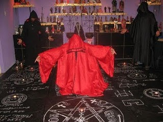

Magias
Faz referência ao uso de poderes sobrenaturais ou magia para fins bons. A magia branca é a....
Ver MaisO que é?
Magia pode ser definida como toda prática que visa intervir no curso natural dos acontecimentos produzindo efeitos extraordinários, por meio da intervenção de seres sobrenaturais (bons ou maus) e do uso de poderes ocultos da natureza, praticada através de rituais e fórmulas.
História
A crença na magia é muito antiga, sendo datada de séculos antes de cristo e era um aspecto muito presente na cultura de diversos povos e civilizações antigas. Há registros de prática mágicas na Babilônia, Egito, Pérsia e Europa Ocidental (povos Celtas).
videoEm muitas civilizações antigas a magia estava diretamente ligada à religião e ao culto aos deuses, por isso muitos magos eram também sacerdotes respeitados e temidos e tinham funções importantes em suas sociedades, atuando como conselheiros pessoais de reis.

Na antiga Babilônia acreditava-se que as estrelas conectavam os homens aos deuses e influenciavam em acontecimentos futuros, podiam fornecer proteção e por meio de sua observação previsões poderiam ser feitas e maus presságios poderiam ser evitados. Os antigos povos celtas cultuavam as forças da natureza e seu panteão de deuses eram personificações delas, seus sacerdotes (druidas) eram os detentores da magia, os responsáveis por encantamentos, pragas, curas espirituais, presságios e divinações, utilização de oráculos e contato com o outro mundo, com os deuses e com os ancestrais.
Na Idade Média o Cristianismo era a religião oficial da Europa e toda prática de magia e culto à natureza foi considerado pela igreja católica como bruxaria e adoração ao diabo. Toda pessoa que fosse suspeita de praticar magia era torturada e condenada à morte, sem direito a um julgamento justo. As acusações eram totalmente infundadas e até remédios e o uso de plantas medicinais eram motivos para se condenar alguém a fogueira.

Relatos
Práticas mágicas que realmente foram confirmadas por pessoas em diversos lugares do.....
Ver Mais